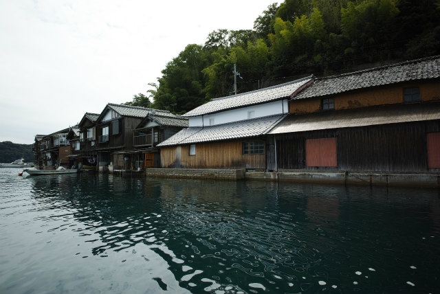
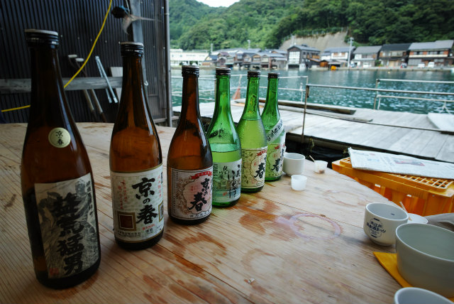
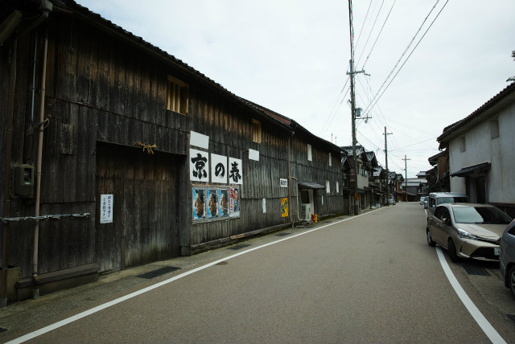
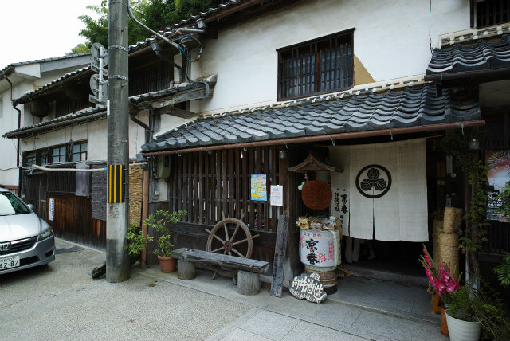

懇親会
|
開催日： 2015年10月10日（土）18:00-20:00 |

懇親会場 KIT HOUSE 1F「オルタス」 | ||
献立
＜前菜盛り合わせ＞
若鶏八幡巻 出し巻
泡麩田楽 茄子の田楽
＜冷製魚料理＞
スモークサーモン 茸添え
イトヨリとたこのマリネ
鯛の薄切 茸ソース
＜冷製肉料理＞
ローストポーク 秋茄子添え
鶏肉の香草焼き トマトソース
＜温製料理＞
ツナと秋野菜のグラタン
点心盛り合わせ
カキフライ タルタル添え
鶏肉の竜田揚げ
おでん
＜ご飯物＞
バケットサンド
細巻寿司盛り合わせ
＜フルーツ＞
フルーツ盛り合わせ
＜ドリンク＞
ビール ワイン 焼酎 ウーロン茶 ジュース 日本酒（向井酒造）
楽酒会
楽酒会を会場にて開催いたします．今回は特別に，海から一番近い酒蔵のある向井酒造より，杜氏の方にお越しいただきます．当日は日本酒を学びながら楽しんでいただけます．
|

舟屋沿いにある白壁の酒蔵 |

海のすぐそばで造られる日本酒 | ||
|

街道側からみる酒蔵 |

街道を挟んで向かい側にある母屋 | ||